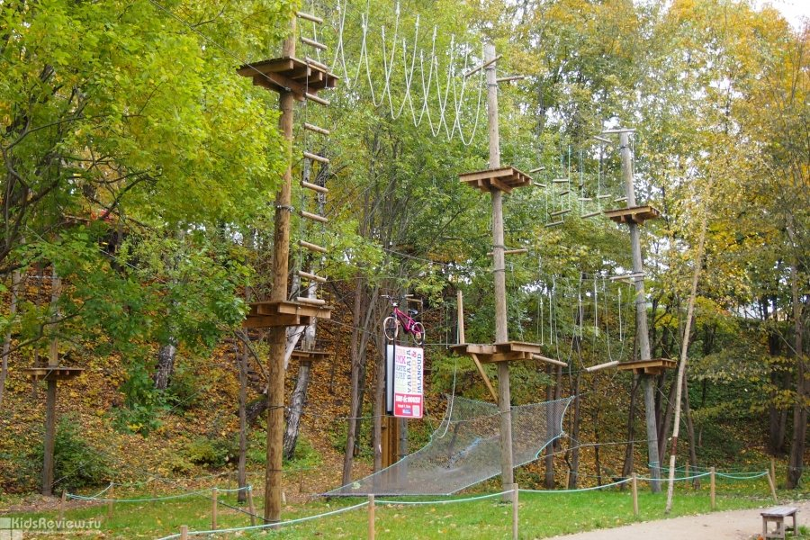
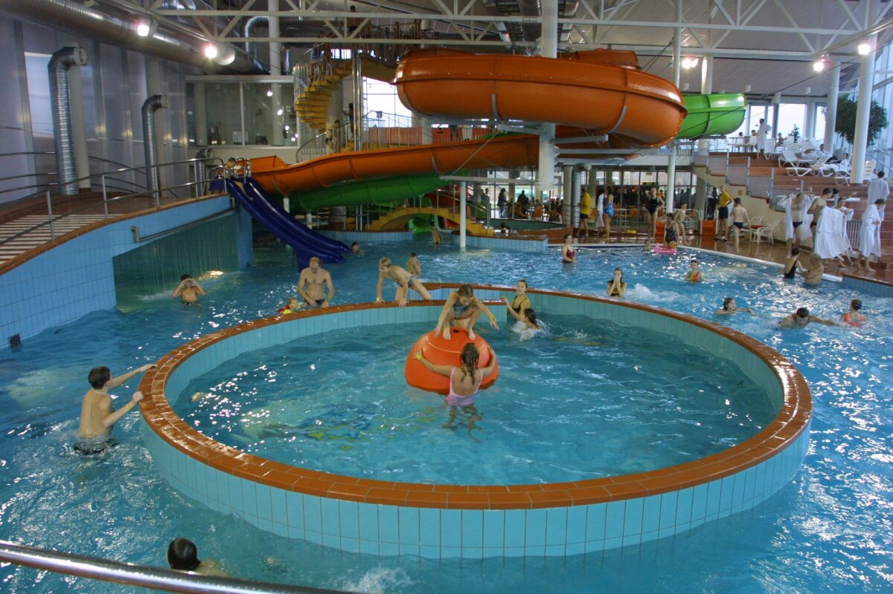

AHHAA teaduskeskus pakkub avastamist nii noorteke, kui vanadele. AHHAA Tartu kesklinnas asuvas majas saab vaadata ja ise järgi proovida erinevaid eksponaate, osaleda unikaalses kerakujulises planetaariumis toimuvatel filmiseanssidel, meisterdada töötubades ja vaadata etendusi teadusteatris.
AHHAA koduleht
Otsid põnevust, Escape Tartu on sinu jaoks ideaalne koht. Escape Tartu on suurim põgenemistubade pakkuja Lõuna-Eestis. Kõik viis põgenemistuba on erinevad nii kujunduse, kui ka ülessannete poolest.
Escapetartu koduleht
Tartu Seikluspark asub Tartu kesklinnast 15-minutilise jalutuskäigu kaugusel. Kohale jõudes ootab Sind ees linnulaul ja mõnus looduslikus roheluses park, mis on täis erinevaid tegevusi. Seikluspargist leiate erinevate raskusastmetega seiklusrajad nii suurtele kui väikestele, pikad trossilaskumised, ronimisseina ja palju muud põnevat. Need, kes seigelda ei soovi saavad seiklejatele kaasa elada ka kohviku terrassilt, kust on nähtav peaaegu kogu pargi tegevus.
Tartu seikluspark koduleht Aura Keskus pakub parimat sportlikku meelelahutust igas vanuses külastajale. Ujulas, veepargis ja saunakeskuses saab kogu perega mõnusalt aega veeta, puhata ja sportida. Saunakeskuse väliterrassil saab tunda iglusaunade kuuma leili ja lõõgastuda mullivannides. Suvekuudel on avatud ka veepargi päikeseterrass, kus külastajad võivad võtta õhuvanne ja nautida kaunist jõevaadet.
AURA veekeskus koduleht 